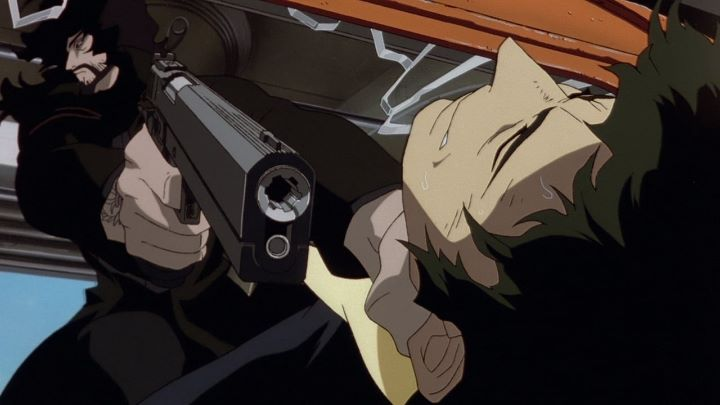

It's a great feeling when a film's opening minutes feel perfect. The first 10 minutes of "Cowboy Bebop - The Movie" (also known by its full title "Cowboy Bebop - Knockin' on Heaven's Door") is one such example. The animated action thriller starts with two of the lead heroes, bounty hunters in a futuristic world, taking care of a small group of low-level thugs trying to rob a convenience store. Everything about the sequence, from the directing, camera shots, choreography, writing, music, sound effects... it's all flawless. And the opening credits that follow are also pretty cool, a feeling that comes across during the entire movie.One of the most impressive things about 2001's "Cowboy Bebop - The Movie" is that, unlike many tie-in anime films, you really don't need to have seen any of the original television series. There are one or two fun cameos and callbacks, but the movie is, first and foremost, a fun old-fashioned action movie, and because of that, it is almost as revered as other "classic" anime films, like "Akira" and "Ghost in the Shell." It's not really a constant series of loud setpieces either; it's as much a mystery-thriller as an action movie. It's definitely a product of it's time, the early 2000's, in style and tone. For new anime fans, that makes it a fascinating experience as much as an entertaining one. The story is stand-alone and mostly predictable. In the year 2071, mankind has colonized Mars, but much of the gritty lifestyle of current-day New York or Tokyo survives. Crime, drugs and violence are as prevaliant as ever, just with one-man spaceships being more common in the sky. Spike Spiegel and his small crew are a gang of bounty hunters living on the old ship "The Bebop," barely making enough woolongs off of their captured bounties. Soon, a new threat emerges: a biological terrorist, with no known motive or identity, and with a 300 million woolong bounty on his head. With Bebop's femme fatale Faye Valentine being the only known witness of the man's first attack, the gang split off to hunt down the terrorist, later identified as Vincent. Along the way, other groups are revealed to have reason to capture or kill Vincent, while Vincent himself plans a massive biological attack on Halloween night.Like many action movies circa that period of recent history, the main character essentially go globe-trotting to various settings, searching for clues to eventually get to the villain. These are mostly excuses for action setpieces, or to introduce interesting side-characters. The plot is relatively satisfying, albiet unambitous. Vincent as the antagonist is the biggest draw, making for a cool dark character in his long dark jacket, even though his motives aren't particularly strong.One notable detriment of the story is how the female characters are treated, another feature shared with other movies from the 1990's and 2000's. Faye Valentine and newcomer Elektra Ovilo are the two main heroines, each being strong and independent figures who know how to use a gun. But their presence ultiamtely boils down to excuses to have them in shower scenes, or scenes of attempted rape, to look pretty while their breasts hang out. The horrible posters (also used for the American DVD releases) of Spike, Faye and Elektra photoshoped to stand next to each other is a symbol of this: the pretty girls are there to sell more tickets, for being pretty more than anything else. I'm nitpicking, but it is an issue, however minor. A much bigger issue is the pacing. "Cowboy Bebop" always took its time in the original show, but at 25-minute sprints, that felt acceptable. At nearly two hours, "Cowboy Bebop - The Movie" definitely drags past the halfway point. It still has good writing, but it's only during the well-choreographed action scenes (maybe 10-15 minutes of the movie) that things feel exciting to watch. As well directed as the movie is, as much as I would hate to edit out anything from it... it would be a tighter movie if 30 minutes or more was cut out. Its style seems heavilty influenced by even older American films (pre 1980), or live-action Japanese films, in regard to this pacing.The animation is slightly better than the series, which is a fairly high bar. Decades later, most of the movie does feel dated, but there are several moments (typically during one-on-one action scenes, or during spaceship flights) where the animation is really strong. That the movie uses old-fashioned cel animation instead of digital makes those scenes all the more impressive. The music is an ecclectic collection of honky-tonk and jazz scores, many of which are vocal inserts. Maybe a few too many vocal songs, like how pop songs were once overused in childrens movies, but you can never fault "Cowboy Bebop" 's music.The English dub is still a strong example of the best dubs available in anime. I had a chance to watch the Japanese dub in a movie theater... and I was amazed at how bad it was by comparison. It was like an entire dimension of the film was missing. And the movie's slow pacing? It feels TWICE as slow in Japanese! The English dub is simply too cool to not watch with, and I can't imagine even anime purists denying that."Cowboy Bebop - The Movie" is a classic action movie of anime, in the same way movies like "Die Hard," "Scarface" and "The Terminator" are classic American films. Not every moment is pure gold, but it's hard to decide how to re-edit it if given the chance: it's all either great but not essential, or essential but not great. I can't decide. But I can watch, and rewatch, the movie many times over, even if I choose to fast-forward through a couple scenes to not fall asleep.
- "Ani" More reviews can be found at : https://2danicritic.github.io/ Previous review: review_Corpse_Princess Next review: review_Coyote_Ragtime_Show